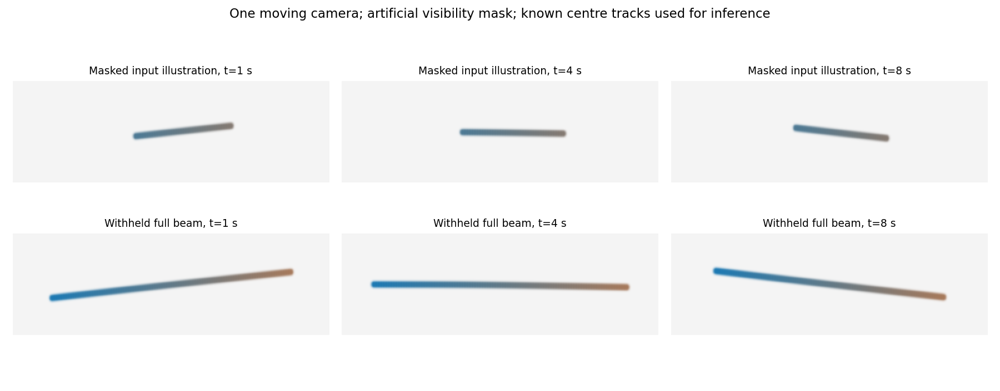
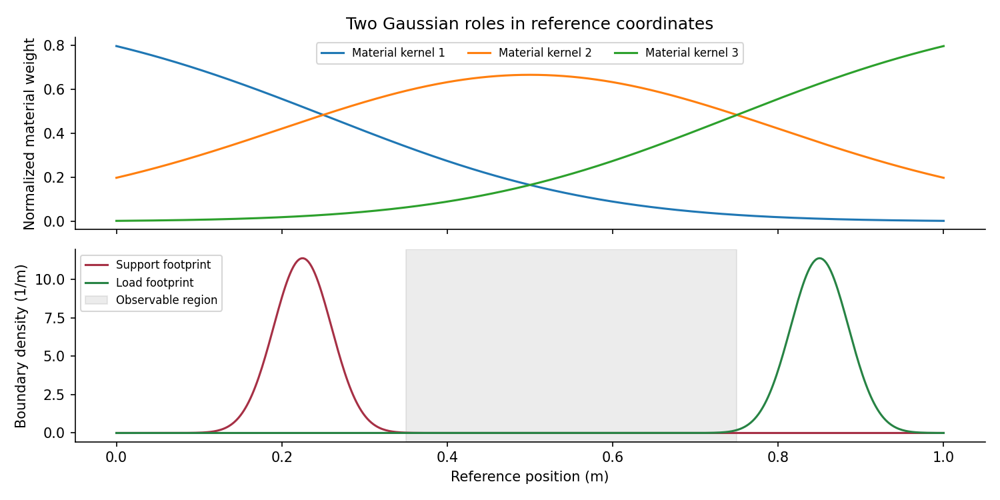
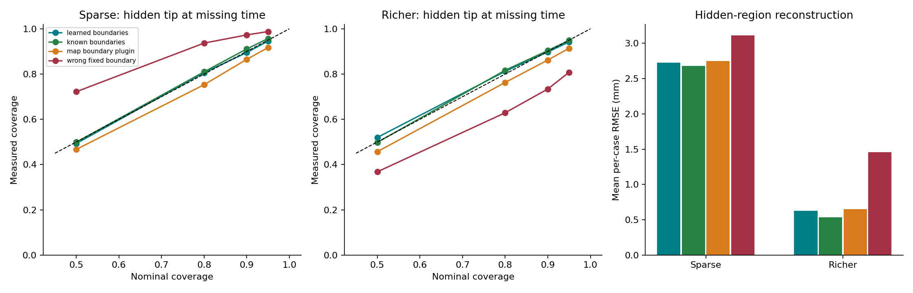
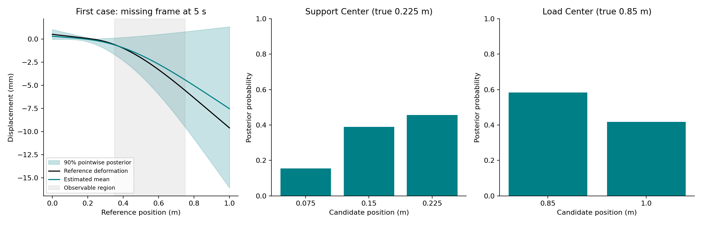

A static material model plus Gaussian support and load patches, viewed by one sparse moving camera.
1000 independent matched-prior cases, 24 boundary hypotheses, 80-element reference versus 40-element inference. Sparse: 3 frames × 3 tracks. Richer: 5 frames × 9 tracks. The support and load centres are outside the visible interval. Unknown Gaussian force histories are integrated analytically; all boundary hypotheses are retained.


Known boundaries supplies the true support and load geometry/compliance but estimates force amplitudes from the same tracks. Wrong fixed boundary always uses dictionary entry zero. MAP plug-in drops uncertainty over the boundary choice. The fully known boundary-and-force oracle reproduces the reference by construction and is not ranked.
| Views | Method | Hidden RMSE (mm) | 90% tip coverage | Interval width (mm) |
|---|---|---|---|---|
| sparse | learned_boundaries | 2.727 | 89.5% | 23.51 |
| sparse | known_boundaries | 2.682 | 91.1% | 23.21 |
| sparse | map_boundary_plugin | 2.751 | 86.5% | 21.69 |
| sparse | wrong_fixed_boundary | 3.114 | 97.3% | 40.18 |
| richer | learned_boundaries | 0.627 | 89.8% | 5.06 |
| richer | known_boundaries | 0.536 | 90.4% | 4.82 |
| richer | map_boundary_plugin | 0.648 | 86.2% | 4.68 |
| richer | wrong_fixed_boundary | 1.456 | 73.4% | 7.52 |


Exact joint boundary MAP accuracy is 19.3% with sparse observations and 32.9% with richer observations. Accurate hidden motion does not imply unique support or load identification. Posterior uncertainty over alternative boundaries is essential.
Predeclared scalar calibration gate: PASS. The gate checks missing-time tip displacement and force in both designs, for learned and known boundaries. It uses 90% coverage within three binomial standard errors and a 99% reference PIT KS threshold. Coverage is across independent prior-predictive cases, not a claim about every individual boundary configuration.
400 cases per arm test continuous off-grid boundaries, a shorter true force correlation time (0.8 s versus the assumed 2 s), and both together, without refitting. The separate arms were added after the initial combined stress test exposed undercoverage.
off_grid, sparse: hidden-motion RMSE 2.210 mm; 90% tip coverage 92.0%.
off_grid, richer: hidden-motion RMSE 0.573 mm; 90% tip coverage 92.0%.
shorter_force, sparse: hidden-motion RMSE 7.823 mm; 90% tip coverage 49.5%.
shorter_force, richer: hidden-motion RMSE 4.943 mm; 90% tip coverage 15.8%.
combined, sparse: hidden-motion RMSE 7.489 mm; 90% tip coverage 46.8%.
combined, richer: hidden-motion RMSE 4.512 mm; 90% tip coverage 15.2%.
Mesh refinement, total applied force, reaction force/moment balance, and energy checks: PASS. Maximum matched-case approximate slope: 0.149 rad. Full values are in the machine-readable report.
All metrics and limitations · Execution provenance · Example boundary probabilities
Run: python experiments/run_beam_boundary.py --config configs/beam_boundary.json --output examples/beam-boundary
Compressed JSON datasets contain all generated boundary parameters, true forces, reference responses and noisy observations. These evaluation truths are not inputs to the inferred-boundary estimator.